Round 8: activities you can read
The round-7 critic gave Gameplay a 6. Their main complaints were the woodpile's timing, the pinecone toss and the kite, plus prompts that showed up away from the props. Each pair below is the same spot in the old build and the new one. Click any image to enlarge.
Woodpile: when to press
While the swinging log hangs square over the pile, an amber ring lights under it and the panel says "Square — press E". Before, the only cue was judging the log's angle by eye, and it was half hidden by the shed.
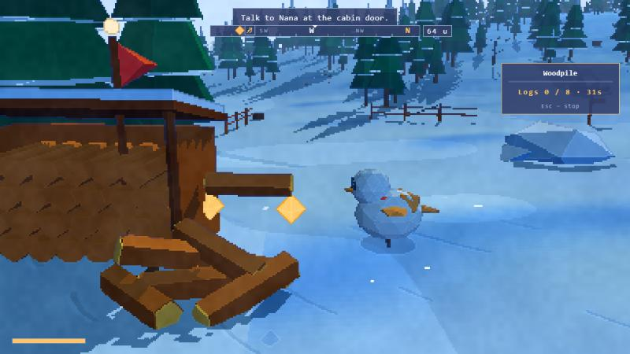
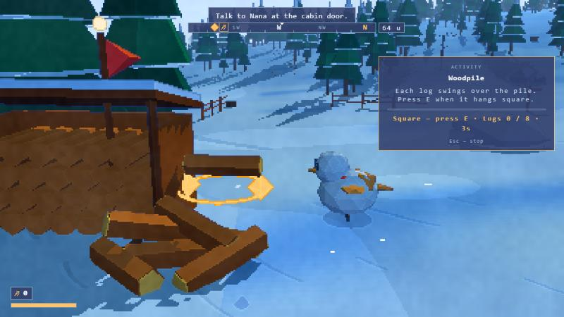
Prompts on the props
An activity used to answer E only near its hidden centre point, which is up to 3.8 u from the prop you can see. Standing at the toss's cones or the kite's post gave you nothing. Now the prop answers too, and the pill stands over the prop. Pressing E from the prop steps Pip onto the spot the activity is played from. The deer run's banner already stood on its spot, and its prompt is unchanged.
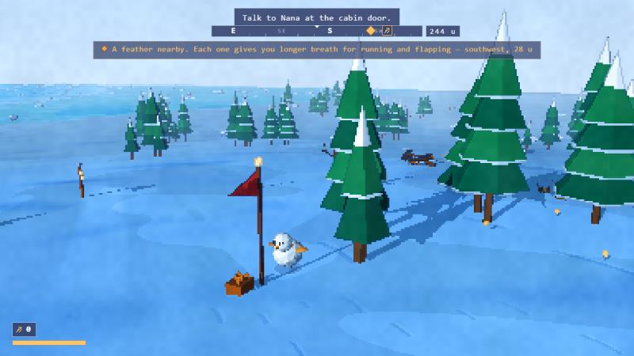
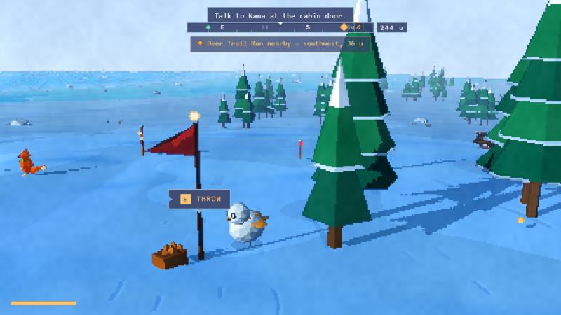
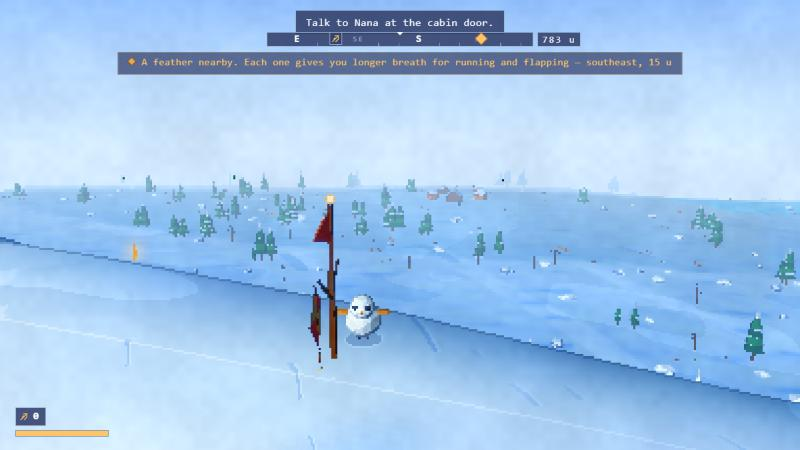
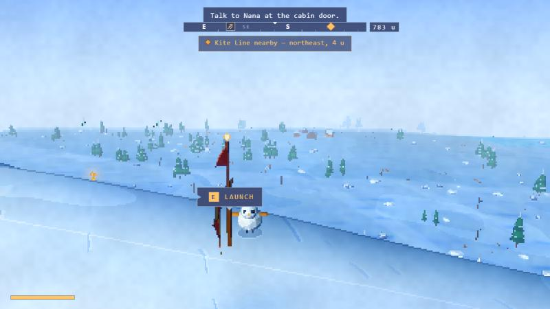
Pinecone toss: aim, hit, miss
The aim dots are amber all the time; they used to be a faint blue that vanished on snow. When a throw would hit, the dots grow, the arc reaches the snowman, and a ring lights at its feet. That cue now plays the throw forward against the snowman's swing, so a throw made on it lands. Before, a throw "on the cue" could still miss a moving snowman. A hit throws off an amber ring and the panel says "Hit!"; a miss says "Missed". The cones and their flag step away while you throw, so the pole no longer crosses the aim.
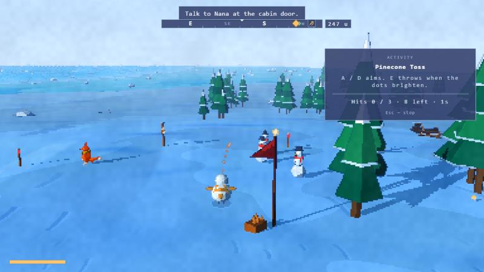
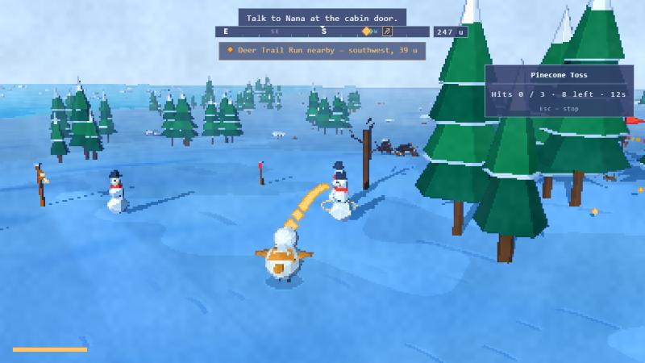
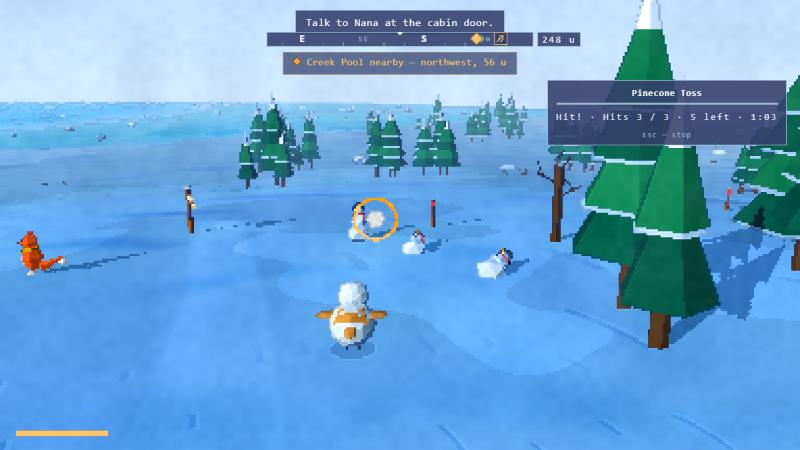
Kite: see the lift, see your steering
The lift used to be a scatter of blue lines across the whole sky. Now it is a lane between two rails of rising wind lines that turn amber while the kite is inside. The kite banks into every press of A or D. When it slips out, an arrow beside it points back to the lane and the panel names the key ("Lift is left — hold A"). Following only those hints, I won the kite in 37 s in one run and 86 s in another.
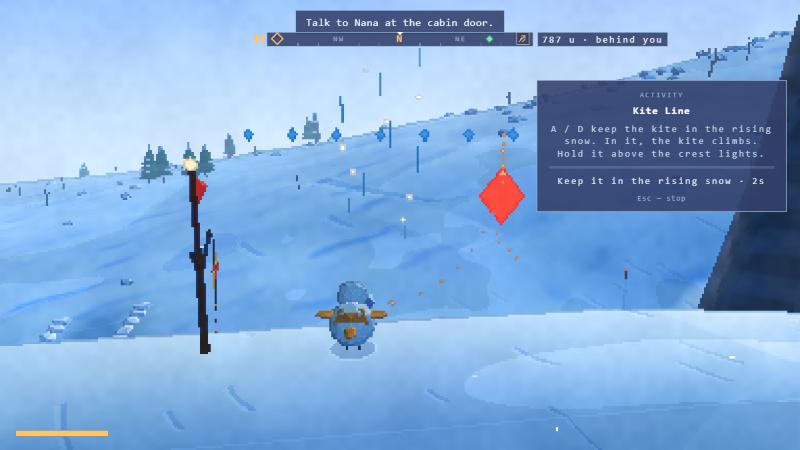
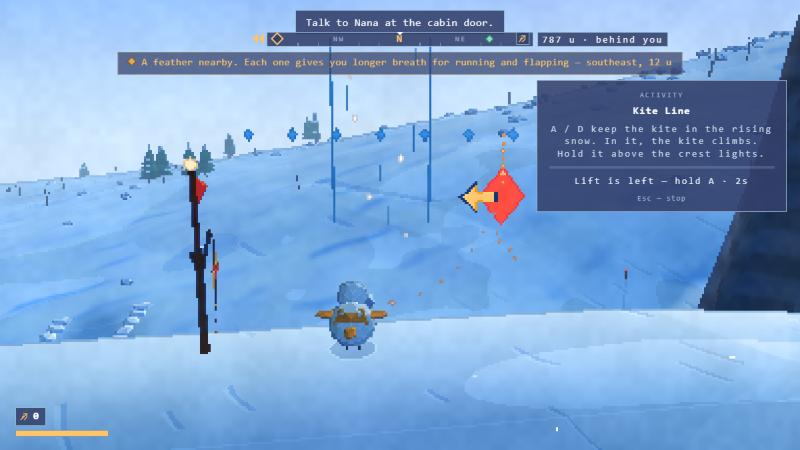
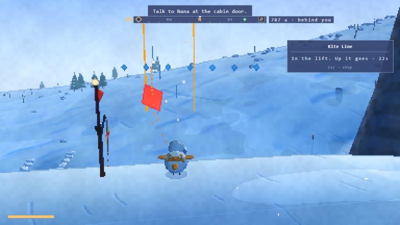
The critic's bugs
- Esc as a round ends opened the pause menu. Fixed. When an activity finishes on its own, its result card stays up for a few seconds. Esc now closes that card first, and only the next Esc opens the menu.
- Holding S "reverses". Not a bug in movement. While S is held, Pip keeps walking the same way and the camera swings round behind. A new press of S after that is "toward the camera" again, which is now the way you came. That's the camera you signed off, so I've left it; tell me if you want it changed.
- View sunk into a steep slope near the ridge (around 262, −245). That's camera territory, so I haven't touched it. The critic's shot is on the round-7 critic page.